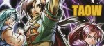
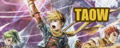

I think Alex just has issues...
 Hmm, I'd say the title
is pretty self-explanatory, isn't it?
Hmm, I'd say the title
is pretty self-explanatory, isn't it?
 It's kind of amazing how
these other sites have stayed up for all this time...
It's kind of amazing how
these other sites have stayed up for all this time...
 There's so much history
out there in those few links.
There's so much history
out there in those few links.
 Oh, I see someone seeks
a means of escape from this hell.
Oh, I see someone seeks
a means of escape from this hell.
 ... That's really not
how I would put it.
... That's really not
how I would put it. Then run! Run while you still can!
Then run! Run while you still can!
 Hopefully they aren't
running from us...
Hopefully they aren't
running from us... How rude! There's nothing wrong with having red eyes and pointy ears!
How rude! There's nothing wrong with having red eyes and pointy ears!
I think Alex just has
issues... Any first
time visitors here wouldn't even get it.
Any first
time visitors here wouldn't even get it.
 Anyway, please don't
mind us and continue on your way out of here.
Anyway, please don't
mind us and continue on your way out of here.
Sites
Fanlistings
Linking to TAOW
If you want to link to The Adepts of Weyard, then you can use one of the buttons here.
 